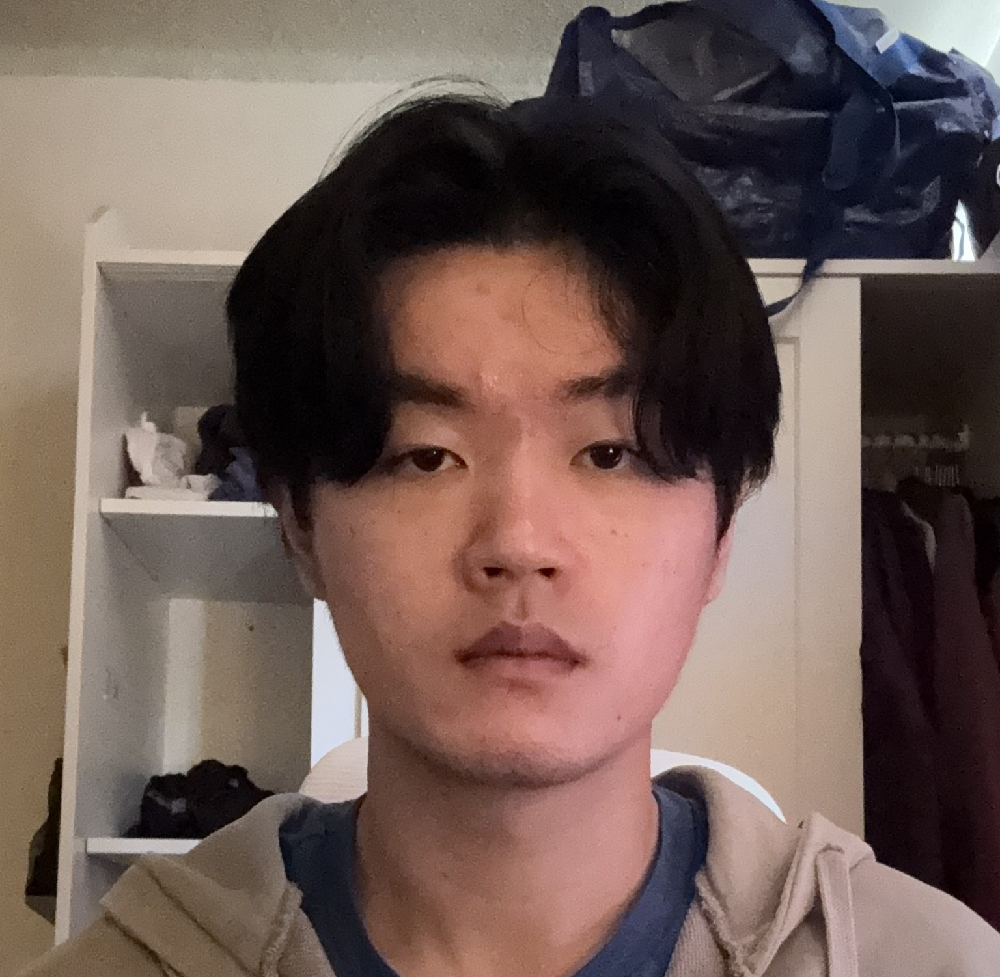
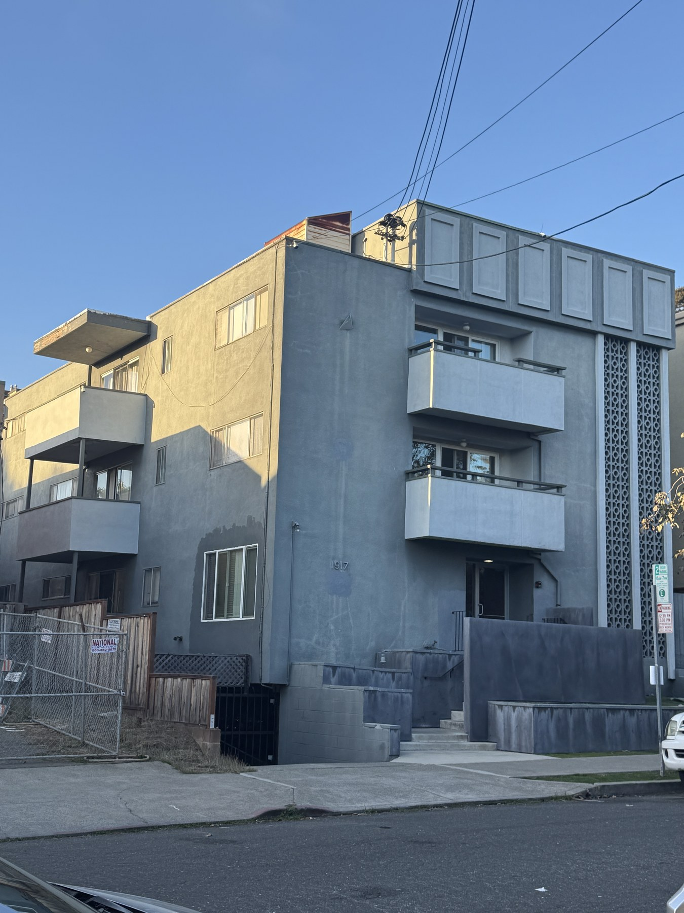
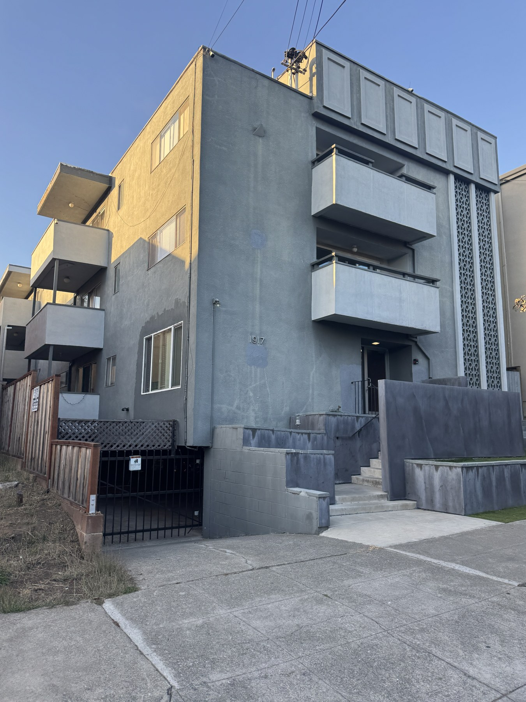
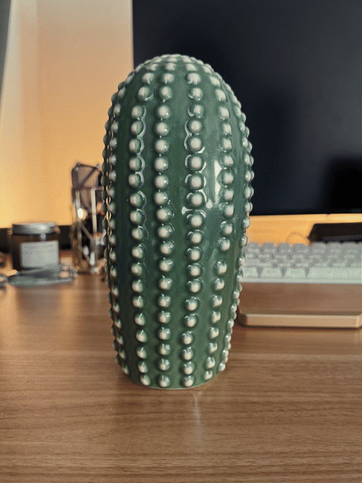
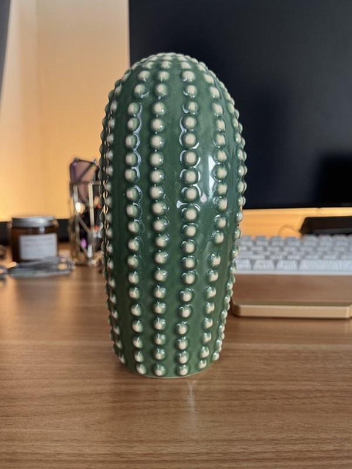
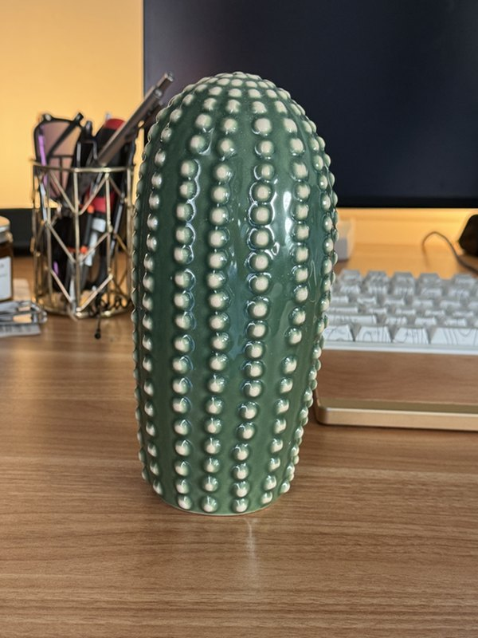
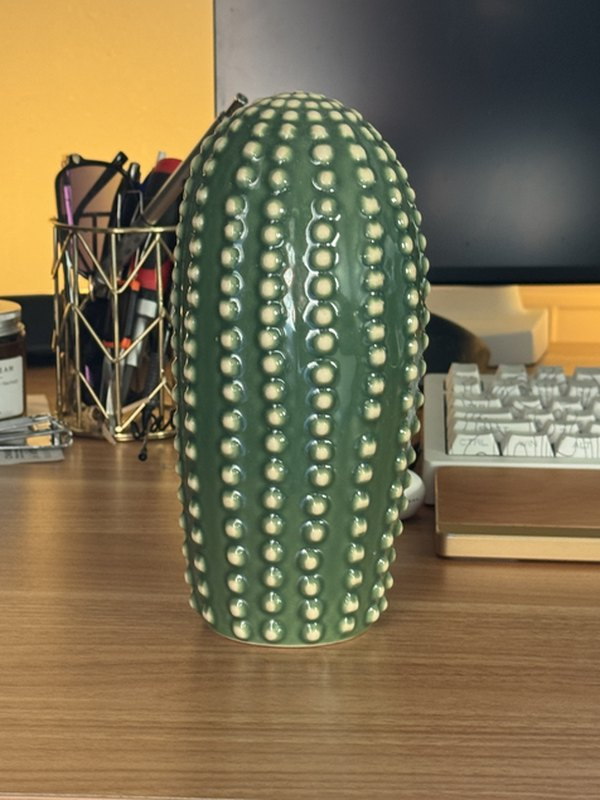
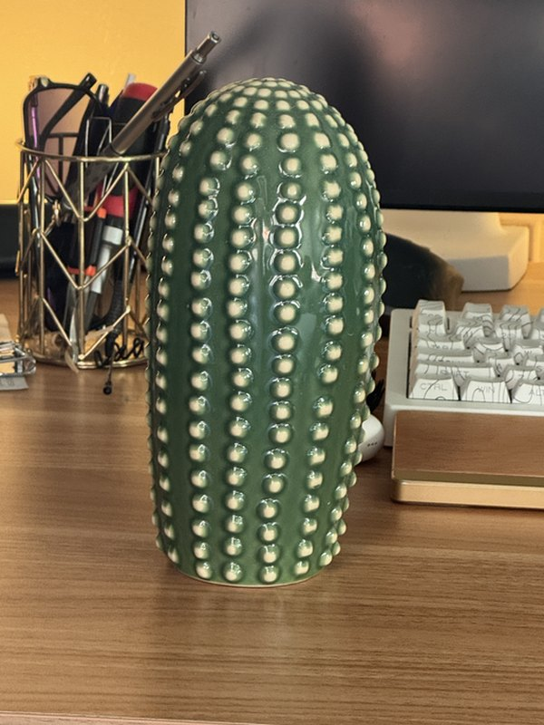
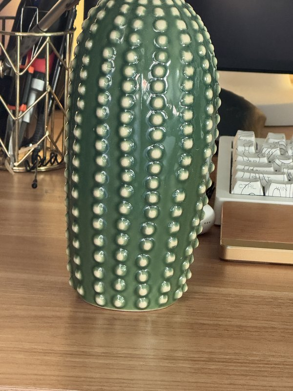
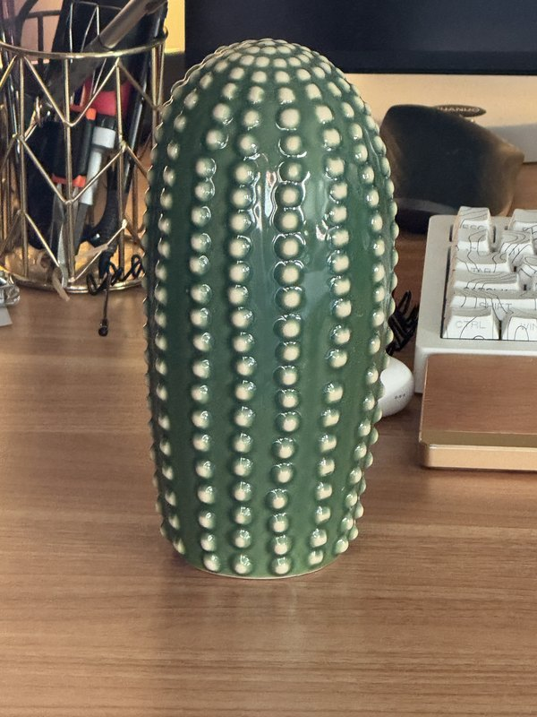

Programming Project #0
Becoming Friends
with Your Camera
An exploration of how camera position and focal length reshape faces, buildings, and the space between them.
Perspective is not a property of the lens. It is a record of where the camera stood.
01
Distance changes the face
The Wrong Way
vs. the Right Way

BWhat changed?
The lens framed the image. The camera position shaped the face.
In the close portrait, the camera is much nearer to the nose than to the ears, so the nose projects larger while the sides of the face recede. Stepping back makes those relative depth differences smaller. Zoom then restores roughly the same face size in the frame without bringing back the close-up distortion.
02
Space, compressed
Architectural
Perspective


“Same building.
Different geometry.”
From farther away, the building’s near and far surfaces are at more similar distances from the camera. Their projected sizes become more alike, producing the flatter, compressed look.
Walking closer exaggerates the depth differences. Nearby balconies and edges grow relative to the receding facade, and parallel lines converge more dramatically. Zoom only helps match the building’s overall size; the viewpoint creates the perspective.
03
The Vertigo shot
The Dolly
Zoom

6 framesThe subject holds its ground while the room seems to breathe.
Across six stills, I changed my distance from the ceramic cactus while adjusting zoom to keep it near the same size. The cactus stays visually anchored, but the keyboard, monitor, and objects behind it shift in scale and spacing.
Opposing changes preserve subject size while transforming perspective.






∞
Final takeaway
Move first.
Zoom second.
Camera position determines perspective; focal length determines how much of that perspective enters the frame. Treating those as separate creative choices makes the camera feel much less mysterious.